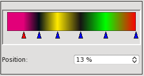
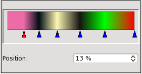
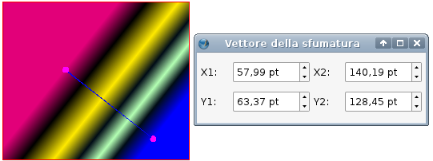
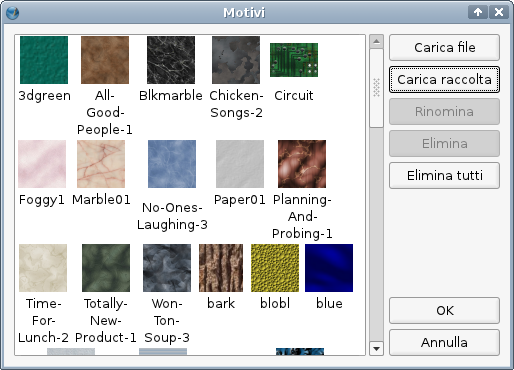
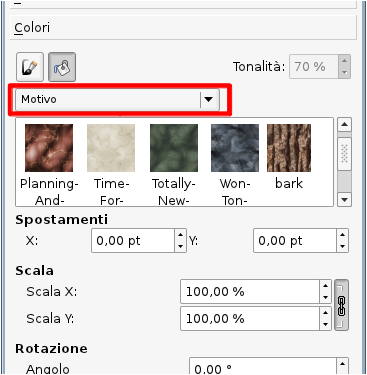

Per cominciare descriviamo il modo più intuitivo di usare un colore di fondo per una cornice. Selezionate la cornice e aprite il pannello Proprietà, scheda Colori: il menù a discesa sotto i pulsanti Modifica proprietà colore linea e Modifica proprietà colore di fondo dovrebbe mostrare la voce “Normale”; scegliete un colore nell'elenco e questo diventerà il colore di fondo della cornice. Nell'elenco compaiono i colori della raccolta colori corrente: ricordate che per passare a una diversa raccolta colori dovete andare in Modifica > Colori... dopo aver chiuso tutti gli eventuali documenti aperti.
La scelta di un colore nell'elenco cambia il colore di fondo, e questo è evidente per le cornici di testo, le forme e i poligoni, ma potrebbe esserlo meno per una cornice immagine, che può essere completamente riempita dall'immagine contenuta. Oltre alla scelta del colore, potete anche regolare la tonalità (la saturazione del colore) e l'opacità (il grado di trasparenza). Per una cornice di testo, la saturazione del colore del testo è un'impostazione a sé che si trova nella scheda Testo del pannello Proprietà. L'impostazione per l'opacità nella scheda Colori si comporta diversamente, e influenza la trasparenza del colore di fondo, ma anche quella del testo in una cornice di testo e di un'immagine in una cornice immagine.
Sotto l'impostazione per l'opacità si trova quella per la selezione del Modo fusione, una caratteristica che ha una certa complessità e che sarà spiegata altrove.
Il menù a discesa di cui abbiamo parlato prima, e che per impostazione predefinita mostra “Normale”, contiene le seguenti opzioni:
Se scegliete una delle sfumature, si apre il selettore delle sfumature, che inizialmente ha soltanto due punti di cambiamento del colore, entrambi neri, alle estremità del selettore. La freccia rossa indica il punto di cambiamento selezionato; potete sceglierne un altro con il mouse. Il punto di cambiamento selezionato è quello a cui vengono applicate le scelte per colore, tonalità e opacità. Potete spostare il punto di cambiamento trascinandolo col mouse oppure con la casella di controllo “Posizione”. Sono sempre presenti almeno due punti di cambiamento, ma potete aggiungerne quanti ne volete, e potete modificare le proprietà di ciascuno di essi in modo indipendente da quelle degli altri. Quando il cursore del mouse si trova nello spazio sottostante la barra orizzontale che mostra la sfumatura, vicino a esso appare un segno + e facendo clic viene creato un nuovo punto di cambiamento, che sarà anche quello attivo. Potete eliminare un punto di cambiamento facendo clic su di esso e trascinandolo con il mouse verso il basso; se lo trascinate in altre direzioni non riuscirete mai a farlo sparire.
Potete anche modificare tonalità e opacità dei colori delle sfumature, e ciascun colore può avere impostazioni indipendenti. Inoltre, la modifica dell'opacità di uno o più dei colori delle sfumature non ha alcuna influenza sull'opacità del testo contenuto in una cornice di testo.
|  |  |
Se selezionate la “sfumatura lineare libera” o la “sfumatura radiale libera” compare un altro pulsante: “Sposta vettore”. Questo pulsante permette di spostare il primo e l'ultimo punto di cambiamento del colore con il mouse, ed è accompagnato da una piccola finestra con caselle di controllo che permettono di impostare i valori numerici delle posizioni:

La prima cosa da sapere sull'uso dei motivi è che non potete usarli se non ne avete; ciò significa che dovete dire a Scribus che cosa dovrà usare come motivo. Questo si può fare con l'apposita finestra di dialogo, che si apre da Modifica > Motivi... nella barra dei menù, dove potete caricare file singoli (“Carica file”) o un'intera directory di file scegliendo “Carica raccolta”. I motivi possono essere in formato sia bitmap sia vettoriale.
|  |
Qualunque oggetto contenuto nel documento (cornice, gruppo, forma, ecc.) può essere usato come motivo per mezzo del comando “Invia ai motivi”, che si trova nel menù contestuale e nel menù Elemento nella barra dei menù.
Quando avete creato almeno un motivo, nella scheda Colori del pannello Proprietà, in fondo al menù a discesa delle sfumature sarà presente la voce “Motivo”. Selezionando questa voce, si apre una piccola finestra che mostra i motivi disponibili, e inoltre sono presenti caselle di controllo in cui impostare gli spostamenti X e Y, la scalatura e la rotazione:
|  |
Scoprirete che se applicate una trasparenza a un motivo, essa sarà applicata anche al testo contenuto in una cornice di testo. Una soluzione alternativa per fare in modo che il testo non abbia trasparenza consiste nel creare una copia della cornice e posizionarla esattamente sopra l'originale, e poi impostare “Nessuno” come colore di riempimento e opacità al 100%.